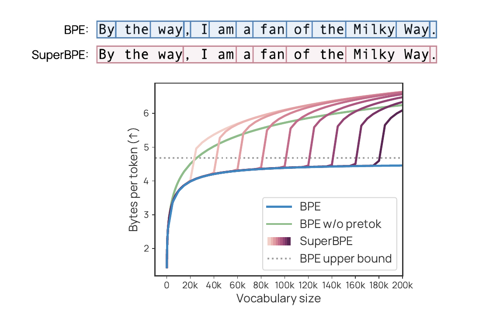

SuperBPE：
相同文本，
更少 token
它的 token 可以跨越空格——于是常见短语会变成单个 token。相比 BPE 的优势随词表增大而拉大：同一上下文窗口装下更多文本，推理更便宜。在一台笔记本上从零复现，$0。
每个分词器都拒绝
跨空格合并
这并不是 BPE 本身——先有一步预分词，按空格把文本切开。BPE 只在每个片段内部合并，所以合并永远无法跨越空格。
token 永远是子词。"New York"、"by the way"、"of course"——都被永久拆成多个 token。
没有它，贪心的 BPE 会先把最高频的跨词垃圾粘在一起——"e▁"、"▁the"、", "——把词表浪费在垃圾上。按空格切分是防止贪心犯错的护栏。2016 年还算合理，今天太死板了。
让 token 成为
超词
SuperBPE 几乎完全保留 BPE。它只是在训练进行到一半时解除空格规则，让高频的多词短语可以变成单个 token。
像 by accident、of course、in the long run 这样的短语都是固定搭配。每个占一个 token＝每篇文档的 token 更少＝同一上下文窗口装更多文本、推理更便宜。
两阶段课程
- 1阶段 1 — 子词。普通 BPE，空格预分词开启。学习基础单元，直到转换点
t。 - 2阶段 2 — 超词。关闭预分词。继续合并——现在词对可以跨越空格。一直到最终词表
T。
先学会词。再学会短语。
两个老算法只是两个极端
| 转换点 | 得到什么 | 结果 |
|---|---|---|
t = T | 从不切换 → 普通 BPE | 基线 |
t = 0 | 从不预分词 → 朴素 BPE | 更差——贪心在早期做出糟糕的合并 |
| 0 < t < T | 先子词再超词 → SuperBPE | 最佳——内部最优 |
论文的主模型用了一个内部转换点——200k 词表中的 t = 180k。先学会词的字母表，再把它们粘成短语。
朴素 (t=0)：5.59 · t=0.6T：5.79（最佳） · 纯 BPE (t=T)：4.91 字节/token。曲线平滑，内部最优——两个极端都更差。
两个阶段源自一个选择
我没有跟库较劲。整个两阶段技巧归结为你在什么单位上训练：阶段 1 在词单位上训练（合并跑不出一个词）；阶段 2 在整篇文档单位上训练（边界消失）。
字节级 BPE ＋ 一个转换点。两个阶段用同一个合并引擎——只是单位变了。
我的数据 vs 论文的图
从零实现的分词器 · 10 MB · 留出分片。每 token 字节数，越高越好。
| 词表 | BPE | SuperBPE | 差距 |
|---|---|---|---|
| 1k | 2.60 | 2.65 | +0.05 |
| 2k | 3.21 | 3.31 | +0.11 |
| 4k | 3.85 | 4.08 | +0.23 |
| 8k | 4.45 | 4.93 | +0.48 |
| 16k | 4.91 | 5.79 | +0.88 |
| 32k | 5.22 | 6.65 | +1.43 |
差距没有缩小——而是拉大。+0.05 → +1.43。

BPE 走平。
SuperBPE 持续上升。
正是论文图 1 的形状，在小规模上复现：BPE 用完了有用的整词后走平；SuperBPE 不断找到常见短语来吸收。
它吃掉了 BPE 吃不下的短语
在 32k 词表下，我的 SuperBPE 学到了 10,918 个超词。它们是什么？固定的多词搭配：
- ▶BPE 走平，因为它用尽了有用的整词，开始添加稀有的垃圾子词。上限是文本的平均词长。
- ▶SuperBPE 持续领先，因为它把常见的词序列当作单个单元——这样的序列要多得多。
Transformer 在每个 token 上花的算力是固定的。把更多文本塞进每个 token，也意味着每个词分到的算力更少——这正是某些前沿分词器反其道而行的原因。↓
同一个旋钮上的两个相反赌注
分词其实悄悄决定了模型在每单位文本上花多少算力。你可以朝任一方向权衡：
✓ 同一上下文窗口装更多文本
✓ 推理更便宜 · 记忆更长
✗ 每个词分到的算力更少
✗ 模糊精确符号（数字、代码）
✓ 每个字符分到的算力更多
✓ 更精准的指令 · 工具 · 数学
✗ 同样文本消耗更多 token
✗ 更贵 · 有效上下文更短
Anthropic 的第一次分词器改动走的是更多 token 的方向：实测约为 4.6 的 ~1.25–1.47× token 数（代码受影响最大）。更小的 token 迫使注意力落到单个词上——与更严格的指令遵循、字符／工具精度相关。代价：每个 prompt 都更费 token。（与新权重一同发布——并非干净的对照。）
给一个已训练模型更换分词器
你不能直接换上去。嵌入表是按旧的 token ID 建的——新 token 指向毫无意义的行，朴素替换会毁掉模型。
1. 智能初始化 — 用它重叠的旧 token 来构造每个新 token 的嵌入（均值初始化 → WECHSEL / FOCUS / ZeTT / OMP「token 手术」），绝不随机。
2. 修复 — 在纯文本上做一段短暂的继续预训练。损失在替换处下跌，随后追上并略微超过旧分词器。
我没有复现的部分
编码效率机制：SuperBPE 胜过 BPE，BPE 走平，差距随词表拉大。在一台笔记本上，$0。
论文在 8B / 200k / t=180k 下的核心结果：30 个任务平均 +4.0%（MMLU +8.2%），同时推理算力少 27%。在约 1M 参数下，下游准确率纯属噪声——论文自己也这么说。在这里宣称复现了它是不诚实的。
我的绝对每 token 字节数与论文不同（10 GB OLMo2 混合语料，200k 词表）。我复现的是形状和方向，而非精确数值——这才是这个规模下可复现的东西。
与前沿相关的工作，
零算力
整个结果都在分词器层面。没有 GPU、没有云、没有训练 run——一次从零的重新实现加一次 CPU 扫描，就复现了一篇 COLM 2025 论文的核心结论。
下一步：把转换点 t 的扫描做成一个自主实验——在我自己的数据上找到内部最优。
论文：SuperBPE — Liu 等
SuperBPE: Space Travel for Language Models。Alisa Liu、Jonathan Hayase、Valentin Hofmann、Sewoong Oh、Noah A. Smith、Yejin Choi · COLM 2025。方法的全部功劳归他们；这是一次独立的小规模复现。
- ↗论文arXiv:2503.13423 · superbpe.github.io
- ↗官方代码github.com/PythonNut/superbpe
- ▤本复现github.com/vukrosic/superbpe-reproduction · 从零的 BPE ＋ 扫描